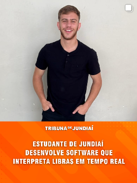

Olá, eu sou
Pedro Stella
Aos seis anos, comecei a treinar karatê em Jundiaí. Anos depois, na escola, comecei a desenvolver o SinalFy com meu professor. Esse projeto me rendeu uma bolsa para estudar Ciência da Computação no UniAnchieta.

Minha história
Conheça mais sobre mim

SinalFy O SinalFy começou na escola, a partir de uma ideia do meu professor Caio Zanin que desenvolvemos juntos. Ver história → Visita à Microsoft
A convite do professor Elton Bordin, visitei o Microsoft Innovation Hub em São Paulo com colegas do UniAnchieta.
Ver história →
Visita à Microsoft
A convite do professor Elton Bordin, visitei o Microsoft Innovation Hub em São Paulo com colegas do UniAnchieta.
Ver história →
 Futebol
Comecei a jogar aos sete anos, fiz uma pausa para o karatê e voltei aos campos em 2022. Hoje jogo em Jundiaí.
Ver história →
Futebol
Comecei a jogar aos sete anos, fiz uma pausa para o karatê e voltei aos campos em 2022. Hoje jogo em Jundiaí.
Ver história →
 Karatê
Comecei no Clube São João aos seis anos. No karatê, fui campeão brasileiro, tricampeão paulista e cheguei à seleção brasileira.
Ver história →
Karatê
Comecei no Clube São João aos seis anos. No karatê, fui campeão brasileiro, tricampeão paulista e cheguei à seleção brasileira.
Ver história →
Linha do tempo
- Aos 6 anos
Comecei a treinar karatê no Clube São João, em Jundiaí.
- Aos 7 anos
Comecei a jogar futebol. Por um tempo, os campos e o tatame fizeram parte da minha rotina.
- 2020
Aos 12 anos, entrei para a seleção brasileira de karatê. Ia representar o Brasil na Bolívia, mas a pandemia cancelou o Sul-Americano.
- 2021
Encerrei meus treinos de karatê na faixa marrom, depois de conquistar o título brasileiro e três títulos paulistas.
- 2022
Voltei a jogar futebol. Hoje jogo no amador aqui em Jundiaí.
- Na escola
Meu professor Caio Zanin trouxe a ideia de um tradutor de Libras. Juntos, começamos a desenvolver o SinalFy.
- 2026
O SinalFy me rendeu uma bolsa integral para cursar Ciência da Computação no UniAnchieta.
- Outubro de 2026
A convite do professor Elton Bordin, visitei o Microsoft Innovation Hub em São Paulo com colegas da faculdade.
Minha stack
Estas são as tecnologias que estudo e uso nos meus projetos.
- HTML
- CSS
- JavaScript
- TypeScript
- Java
- Python
- MongoDB
- PostgreSQL